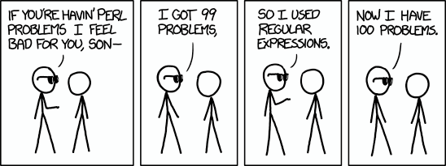

Die Nerd Enzyklopädie 4 - RegExen — Jetzt hast du zwei Probleme
Reguläre Ausdrücke sind umstritten: Geliebt als vielseitiges Werkzeug, verdammt als undurchschaubare Fehlerquelle. Nicht ohne Grund heißt es: Reguläre Ausdrücke lösen ein Problem und schaffen zwei neue.
Woher kommt diese Hassliebe?
Eine exotische Tierart
Reguläre Ausdrücke, kurz RegExen, sind mitunter schwer zu entwickeln und irgendwann kaum noch lesbar. Das erschwert das Debugging, also die Fehlersuche. Wie wäre es zum Beispiel mit diesem Schmuckstück:
^(?=.*[A-Z].*[A-Z])(?=.*[!@#$&*])(?=.*[0–9].*[0–9])(?=.*[a-z].*[a-z].*[a-z]).{8}$
Na, erkannt? Diese RegExe überprüft ob eine Passwort-Zeichenfolge bestimmten Sicherheitsanforderungen entspricht. Diesen Hinweis kann man im Quellcode vielleicht noch dokumentieren. Aber was wenn sich die Sicherheitsanforderungen im Detail ändern?
Mit Kanonen auf Spatzen…
RegExen werden außerdem gerne dort eingesetzt, wo eigentlich bessere, standardisierte Lösungen vorhanden sind, wie z.B. für das Parsen von XML [FLAP1]:
\s*
(?(?=<)
(?<opentag>
< \s*
(?<tagname>\w+)
(?<attibute>
\s+
(?<attrname>[^\s>]+)
=
(?<attrquote>"|'|)
(?<attrvalue>[^\s"'>]+)
(\k{attrquote})
)*
\s*
(?<selfclosing>\/\s*)?
>
)
(?(<selfclosing>)|
(?<children>(?R))
(?<closetag><\s* \/ \s* \k{tagname} \s*>)
)
|
(?<text>[^<]*)
)*
\s*
Was aussieht als wäre deine Katze auf der Tastatur eingeschlafen, ist eine funktionsfähige RegExe. Mit genau einem Vorteil: Wenn man den Ausdruck Stück für Stück zerpflückt, um ihn zu verstehen, kann man viel über die Möglichkeiten regulärer Ausdrücke lernen. Im produktiven Betrieb sollte man trotzdem auf alternative Ansätze zurückgreifen, um mit XML-Daten zu arbeiten. Wie z.B. XML-Parser, die soll es ja wirklich geben.
Backtracking
RegExen können auch zu handfesten Sicherheitsproblemen führen. Die Ursache liegt in der Art, wie RegExen verarbeitet werden. Sie durchlaufen einen String zeichenweise, bis eine Bedingung nicht mehr erfüllt wird und springen dann zu dem Zeichen zurück, an dem der Ausdruck vielleicht einen anderen Lösungsweg nehmen kann. Dieses Vorgehen nennt man Backtracking, also Rückverfolgung. Diese Funktion kann aber zu einem Rückkopplungs-Effekt führen, wodurch die Dauer der Verarbeitung exponentiell ansteigt. Die Folge nennt man „Catastrophic Backtracking“, eine wichtige Grundlage für ReDOS (Regular Expression Denial Of Service) Angriffe [REGU1]. Ein einfaches Beispiel ist dieser reguläre Ausdruck [MEDI1]:
(x+x+)+y.
Diese RegExe lässt sich sicherlich optimieren, sie soll auch nur zeigen, wie schnell die Verarbeitung eskalieren kann. Als Test-String dient diese einfache Zeichenkette:
xxxxxy
Die Verarbeitung erfordert in diesem Fall in 123 Schritte. Passen wir die Zeichenkette nun etwas an:
xxxxxxxxxxxxxy
Mehr als 38.000 Schritte sind jetzt erforderlich, um den regulären Ausdruck zu prüfen. Mit dem richtigen regulären Ausdruck und der passenden Zeichenkette kann ein Browser „mühelos“ zum Absturz gebracht werden.
Der Einsatz von regulären Ausdrücken ist also streitbar. Übrigens: Dem Netscape Entwickler Jamie Zawinski wird zugeschrieben, diese Erkenntnis als erster in Worte gefasst zu haben. Er stellte bereits 1997 fest [CODI1]:
Some people, when confronted with a problem, think “I know, I’ll use regular expressions.” Now they have two problems.
Dieser Ausspruch geht wiederum auf David Tilbrook zurück, der sich (selber nur vage) erinnert, wie er 1985 auf einer Konferenz in Dublin die Nutzung des Kommandozeilen-Tools awk kommentiert [REGE1]:
“If you have a problem and you think awk is the solution, then you have two problems.”
RegExen und awk sind nicht die einzigen zweifelhaften Tools, auch Perl hat einen gewissen Ruf. Aber vermutlich ist das nur eine besondere Art von Nerd-Humor, vor der niemand sicher ist:
